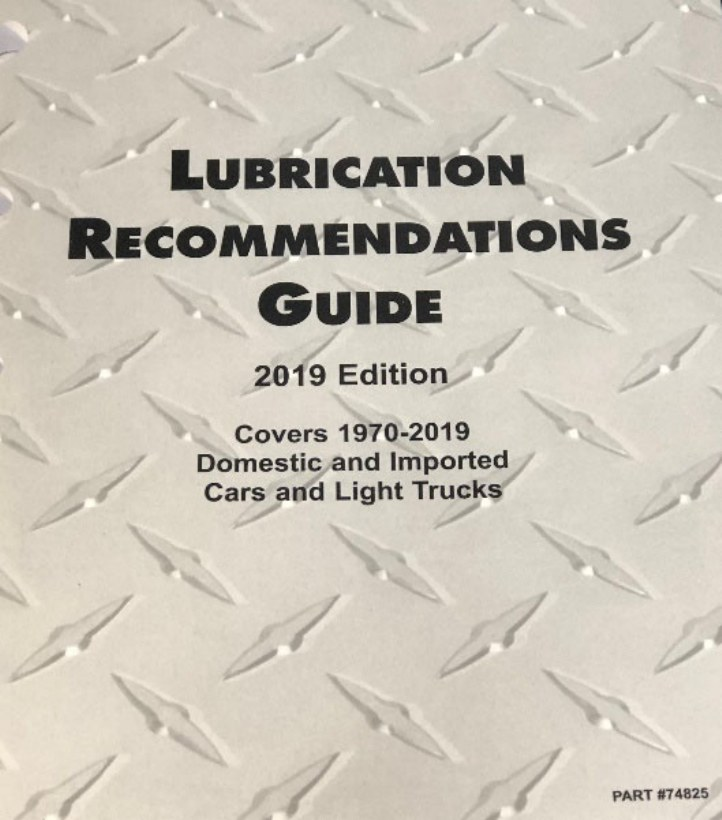

Doc no. MOC-TSB-20-03 // Vol. 20 No. 03 // Mar 5, 2020 // Cooling
Lubrication Recommendations Guide Including both Coolant and Transmission Fluid
New74825
MOC has created a new Lubrication Recommendations Guide for automatic transmissions for most major vehicle manufacturers and models from 1970-2019. The new Guide includes the manufacturer's recommended fluid capacities and type. As an additional benefit, the new Guide also includes the fluid capacity and type for cooling systems. This new guide is Part No. 74825. This guide covers all vehicles from 1970-2019. It will replace the 2 individual guides for cooling systems and automatic transmissions.
What's new
Contact
For more information, contact the Machine & Equipment Department at 866.244.6621.

Part numbers
| Part No. | Description | Notes |
|---|---|---|
| 74801 | MANUAL, FLUID CAP/AUTO TRANS/DRIVE LINE (DISCONTINUED) | |
| 74821 | MANUAL, FLUID CAPACITY, COOL SYS (DISCONTINUED) | |
| 74825 | MANUAL, LUBRICATION & COOLANT RECOMMENDATIONS |